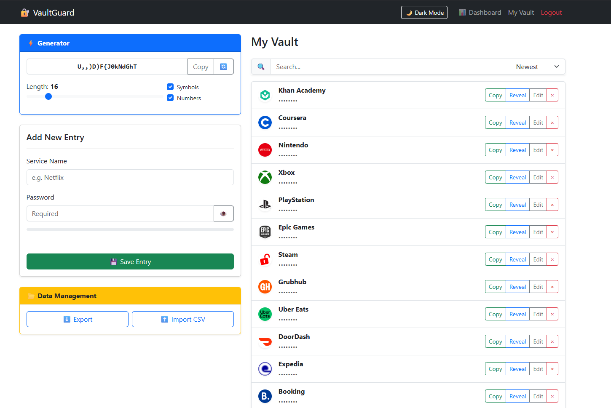
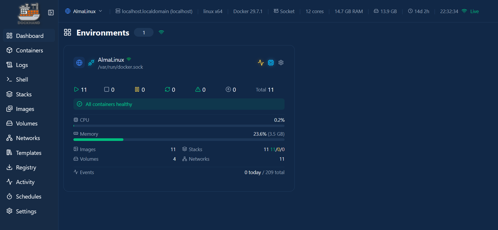

Course Projects & Artifacts
VaultGuard
Introduction: VaultGuard is a modern, open-source password manager built with Python (Flask) and Bootstrap 5, featuring a robust security dashboard and client-side encryption logic.
Retell: I built a full-stack password manager utilizing AES-GCM encryption for data storage and Argon2 hashing for master password authentication. It includes a smart vault that automatically fetches icons using APIs and assigns a security grade based on password habits.
Relate: This artifact connects to the COOP 2100 themes of professional credential building and problem-solving. By developing this, I applied complex algorithmic thinking required for securing sensitive data—skills directly transferable to my backend automation testing work.
Reflect: I learned how challenging it is to implement a true zero-knowledge design. If I were to do this differently, I would shift more of the rendering logic from Jinja2 templates to a dedicated frontend framework like React to improve state management. This project changed my thinking on the vital importance of data portability (CSV/JSON imports) in user-centric software.

Personal Homelab Architecture
Introduction: A multi-node personal server environment utilizing AlmaLinux and Windows 10 IoT to host and monitor internal network services.
Retell: I orchestrated a home lab using an AMD Ryzen laptop as the primary host. I configured Docker to run services like Uptime Kuma, Jellyfin, and a central dashboard, while securing remote access through a Tailscale mesh VPN rather than traditional port forwarding.
Relate: This hands-on infrastructure setup mirrors the complex deployment environments I navigate daily in my COOP 2100 placement. Understanding how containers, DNS, and secure tunnels operate gives me critical context when running root-cause analysis on pipeline failures.
Reflect: I learned that optimizing lightweight hardware requires strict resource management. Managing SELinux policies and reverse proxies taught me patience. Moving forward, I will invest more time into automated deployment scripts (like Ansible) rather than manual configurations, as this experience highlighted how quickly undocumented setups become difficult to scale.
